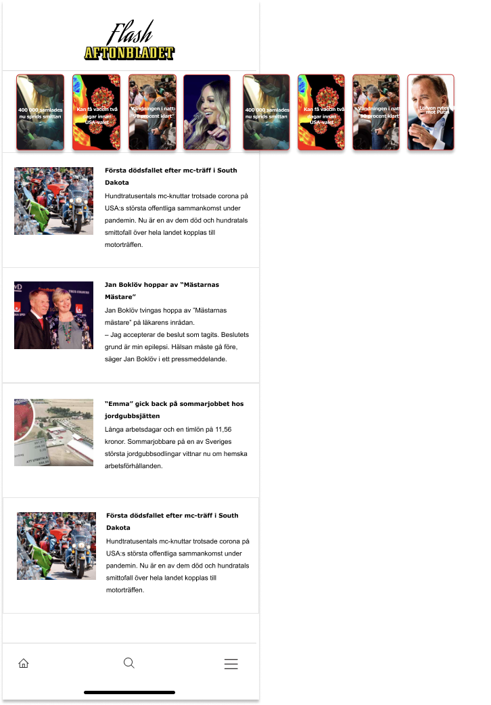

Our concept is a daughter app for Aftonbladet that will attract the younger generation of users.
Our answer on how Aftonbladet can get younger readers to turn to them as a primary source of information
and
news.

INSIGHTS
Generation Z is an impatient, elusive and overworked person. Life is digital and digital is life but
the discomfort of being monitored is constantly present.
Their curiosity for the outside world is partly based on a need to be perceived as smart. But it
should be done in their own terms and not on a behavioral principle.
They put high value on credibility linked to news reporting and find source criticism very
important.
DESIGNING FOR USER NEEDS
USER STORY: ”As an information seeking person I want to access Quality news quickly so
that I will be perceived as smart”
HMW: How might we help impatient and critical GenZ readers to feel smart by using our
news service?